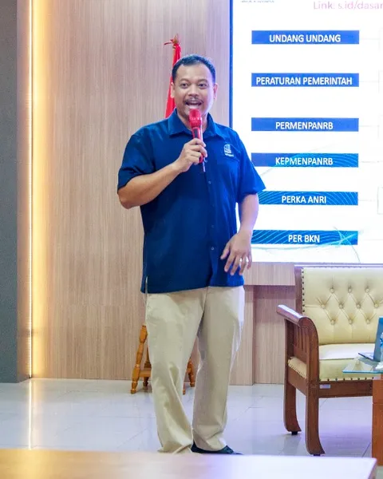
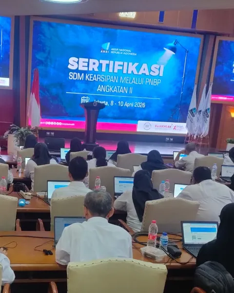
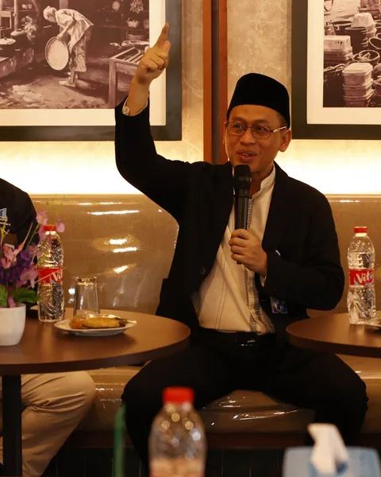
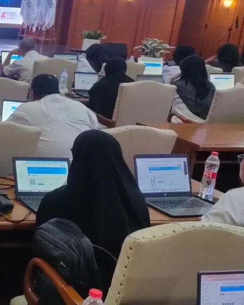
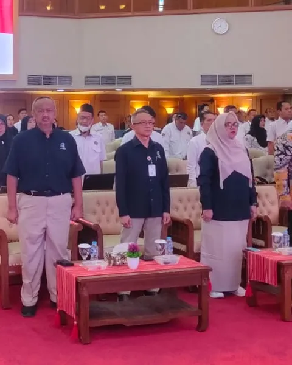

Satu platform untuk
data JF Arsiparis
Rekomendasi kebutuhan, ketersediaan, penghitungan formasi, pengawasan, dan sertifikasi arsiparis seluruh Indonesia.




Untuk SDM
kearsipan
Di balik setiap angka ada arsiparis yang dibina, diuji, dan disertifikasi oleh Direktorat SDM Kearsipan dan Sertifikasi ANRI.

Dibuat untuk semua
Dari instansi yang menghitung kebutuhan sampai pimpinan yang memantau keterisian.
Untuk instansi
Hitung kebutuhan dari beban kerja, impor dari Excel, kirim ke ANRI.
Untuk pembina kearsipan
Catat dan telusuri rekomendasi per instansi, kluster, dan tahun.
Untuk pimpinan
Lihat seberapa terisi kebutuhan arsiparis, nasional sampai kabupaten/kota.
Rekomendasi dan ketersediaan, berdampingan
Formasi yang direkomendasikan ANRI dibandingkan arsiparis yang tersedia menurut BKN.
Untuk arsiparis
Jadwal uji kompetensi dan data sertifikasi dari tahun ke tahun.
Lima menu, satu sumber
Pilih menu untuk melihat isinya.
Terhubung ke sumber data resmi
Berpijak pada regulasi
Dasar hukum penghitungan kebutuhan Jabatan Fungsional Arsiparis.